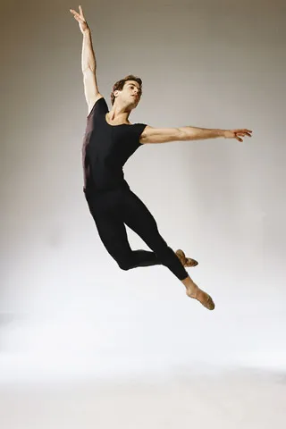

Accueil
Watch work
Centre d'interet
Formation
Bienvenue sur mon site !
Ici, je me présente, découvrez mes centres d'intérêt, suivez mon parcours et retrouver le travail de veille sur mon empreinte numérique en anglais.
